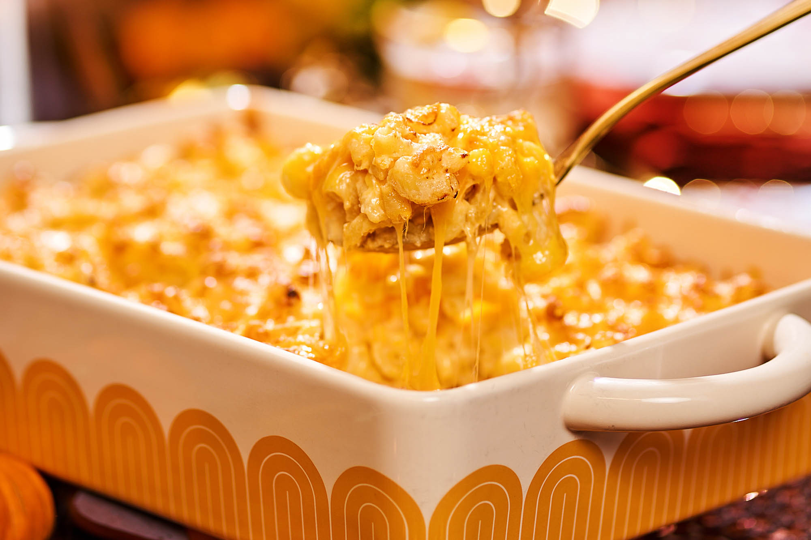

Mac N Cheese

Everyone loves some Mac n cheese
Pay close attention to the directions so you can cheese it up
Ingredients
- 2 teaspoons kosher salt, divided
- ¾ teaspoon black pepper, divided
- 1 pound uncooked elbow macaroni
- 3 large eggs
- 8 ounces cream cheese, softened
- 2 teaspoons dry mustard
- 1 pound extra-sharp cheddar cheese, shredded (about 4 cups)
- 8 ounces Colby-Jack cheese, shredded (about 2 cups), divided
Things to remember
- Don't think about it to much. Its mac n cheese
- If you make it really good it will taste great
- You love mac n cheese
Instructions
- Preheat oven to 375°F with 1 rack in middle position and 1 rack positioned 6 inches from upper oven heating element. Rub butter all over inside of a 13- x 9-inch baking dish; set aside.
- Place a large strainer over a large heatproof bowl. Stir together cream, milk, bay leaves, 1 1/2 teaspoons of the salt, and 1/4 teaspoon of the pepper in a medium saucepan; bring to a simmer over medium. Stir in pasta; return to a simmer. Simmer until almost al dente, about 4 minutes. Pour pasta through strainer, letting cream mixture strain into heatproof bowl; remove and discard bay leaves. Reserve 1 1/2 cups strained cream mixture; discard remaining cream mixture, or reserve for another use. Set aside.
- Gently whisk eggs in a large heatproof bowl. If reserved cream mixture is no longer hot to the touch, microwave on medium (50% power) until hot but not boiling, 30 to 60 seconds. Slowly pour or ladle about 1/2 cup warm cream mixture into eggs, whisking quickly and constantly, until eggs are warm and tempered. Whisk in cream cheese, mustard, and remaining 1/2 teaspoon each salt and pepper (mixture will be chunky). Add remaining 1 cup warm cream mixture, and whisk to combine. Add Cheddar, and whisk until cheese starts to melt but some solids remain. Add cooked pasta; fold to combine. Pour half of the pasta mixture (about 4 cups) into prepared baking dish. Sprinkle with 1 1/2 cups of the Colby-Jack. Spread remaining pasta mixture over Colby-Jack. Cover tightly with aluminum foil.
- Bake on middle rack in preheated oven until bubbling around edges, about 30 minutes. Remove from oven, and carefully remove foil. Sprinkle with remaining 1/2 cup Colby-Jack, and return to oven on rack 6 inches from heating element. Increase oven temperature to broil, and broil until cheese is browned in spots, 4 to 5 minutes. Remove from oven. Let cool until pasta mixture is set and firm, about 10 minutes. Serve warm.
Home Page